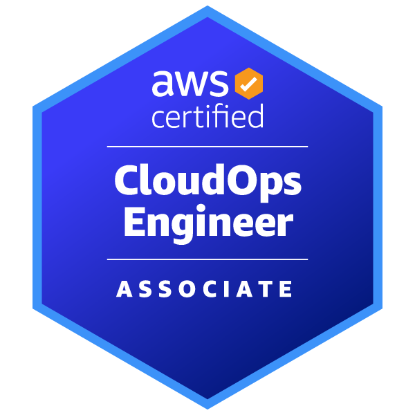

JCB Cloud Migration / Batch Platform Engineering
온프레미스 기반 금융 시스템을 Google Cloud 기반 환경으로 전환하는 프로젝트에서 클라우드 배치 실행 아키텍처 설계 및 기술 검증,운영 자동화 설계, 실행 모니터링 및 로그 관리 체계 검토 등의 업무를 수행했습니다.
From Code to Cloud. Building End-to-End Systems.
저는
한국에서 프론트엔드/웹 개발 경험을 쌓은 뒤 일본 IT 프로젝트에서 공공 시스템 운영과 금융권 클라우드 전환 업무를 경험했습니다. 현재는 클라우드 인프라, DevOps, 배치 플랫폼, 운영 자동화 역량을 중심으로 커리어를 확장하고 있습니다.
온프레미스 기반 금융 시스템을 Google Cloud 기반 환경으로 전환하는 프로젝트에서 클라우드 배치 실행 아키텍처 설계 및 기술 검증,운영 자동화 설계, 실행 모니터링 및 로그 관리 체계 검토 등의 업무를 수행했습니다.
지자체 건강보험시스템 표준화 프로젝트에서 Java 기반 애플리케이션 운영 및 시스템 환경 구축을 수행하였으며, Oracle Database를 활용한 데이터 조회 및 장애 원인 분석, 애플리케이션 로그 수집·분석, 배치(Job) 실행 검증, 계정 및 권한 관리, 출력(帳票) 기능 디버깅 등 시스템 운영 및 유지보수 업무를 담당했습니다.
기업 IR 및 웹 페이지 구축 프로젝트에 참여하여 HTML, CSS, JavaScript 기반 UI 구현을 수행했습니다. 반응형 웹 레이아웃 적용, 화면 퍼블리싱 및 유지보수를 담당했으며, Git 기반 형상관리와 협업 프로세스를 경험하며 프론트엔드 개발 및 협업 역량을 쌓았습니다.
AWS와 GCP를 모두 학습·활용하며 정적 호스팅, 서버리스, 컨테이너 배치 실행 구조를 다룹니다.
인프라 변경을 코드화하고 배포·실행·로그 확인까지 이어지는 운영 흐름을 설계합니다.
운영 환경에서 로그, DB, 콘솔 출력 결과를 분석하여 장애 원인을 조사하고 기술 문서화 업무를 수행합니다.
개발 경험을 바탕으로 클라우드 인프라와 애플리케이션 사이의 연결 구조를 이해합니다.
다양한 협업 툴을 활용한 실무 경험을 바탕으로, 조직 환경에 관계없이 원활한 협업과 커뮤니케이션을 지향합니다.

모니터링, 운영, 장애 대응, 자동화, 보안 운영 관점의 클라우드 운영 역량

Lambda, API, DynamoDB, 배포, 애플리케이션 연계 관점의 AWS 활용 역량

VPC, EC2, S3, RDS, Route 53, CloudFront 중심의 클라우드 설계 역량

SageMaker, Bedrock 등 AI/ML 서비스 활용 관점의 클라우드 기반 AI 역량

IAM, EC2, S3 등 핵심 서비스 이해를 바탕으로 한 클라우드 기초 역량